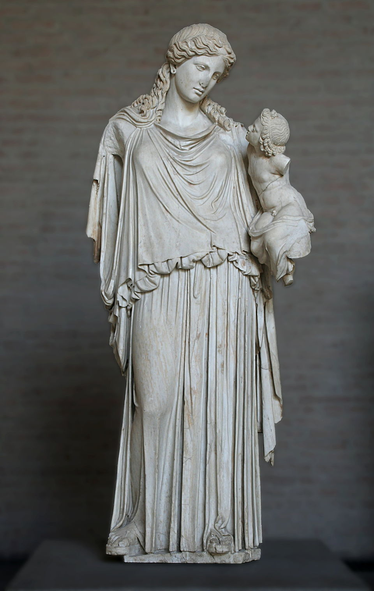
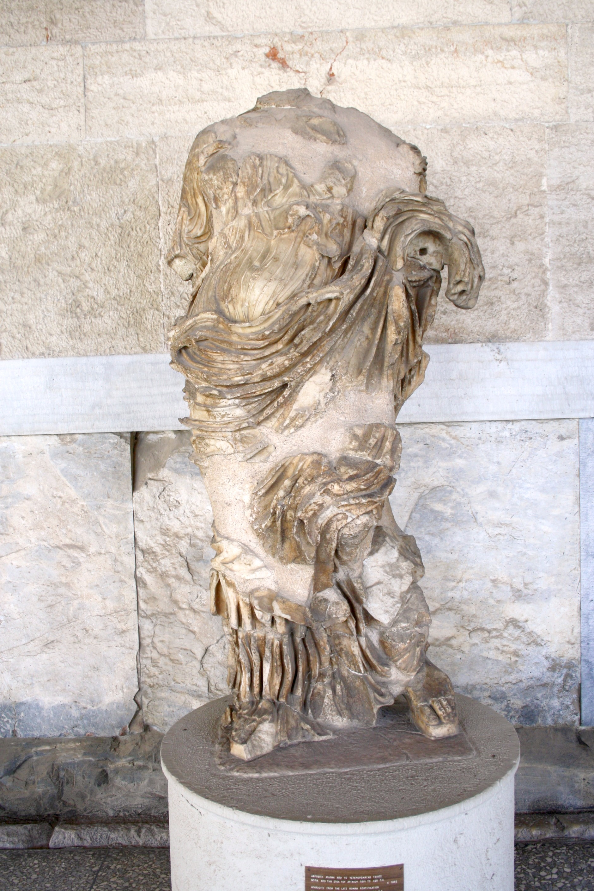
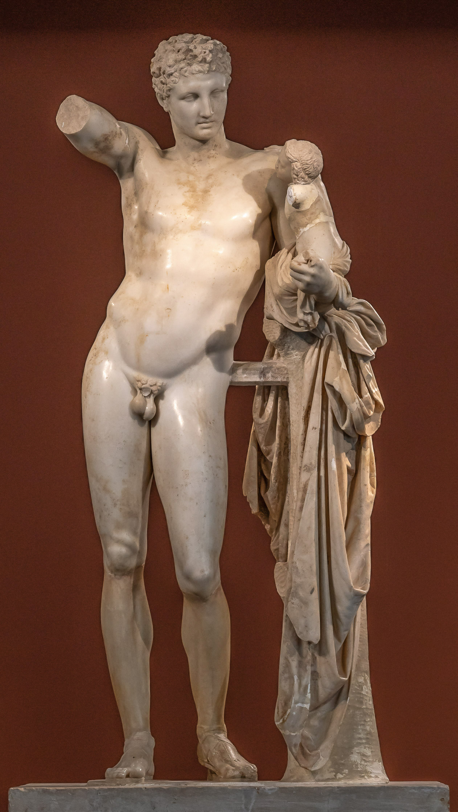

This lesson covers the Late Classical period (c. 400-323 BCE) - a time when Greek sculpture moved away from the austere idealism of the High Classical towards something softer, more sensuous, and more emotionally expressive. The dominant figure is Praxiteles of Athens, perhaps the most famous sculptor of antiquity.
Why "Late" Classical?
The term "Late Classical" doesn't mean inferior - it marks a shift in aesthetic values. Where High Classical sculpture (Polykleitos, Myron) emphasised mathematical proportion, self-control, and dignified restraint, Late Classical artists explored new territory: softer bodies, more languid poses, greater emotional depth, and - most dramatically - the female nude. This isn't decline but development.
The Four Prescribed Sources
Eirene and Ploutos
By Kephisodotos the Elder, c. 370 BCE. Peace personified holding Wealth - political allegory in sculptural form. Transitional work bridging High and Late Classical.
Aphrodite of the Agora
c. 420-410 BCE. A clothed Aphrodite showing the "Rich Style" of late 5th century Athens - the goddess of love before Praxiteles' revolutionary nude.
Hermes and the Infant Dionysus
Attributed to Praxiteles, c. 340 BCE. Possibly the only surviving original by the master - or a very fine Roman copy. The quintessential Late Classical male figure.
Aphrodite of Knidos
By Praxiteles, c. 350 BCE. The first monumental female nude in Greek art - perhaps the most influential single sculpture ever made.
The Copy Problem (Again)
Except possibly for the Hermes (debated), we have NO original works by Praxiteles. The famous Aphrodite of Knidos is known only through Roman copies. This is crucial to remember: when we discuss "Praxitelean style," we're often reconstructing it from copies of varying quality. The Hermes at Olympia may be exceptional precisely because it might be an original.
Key Sculptors of the Period
Kephisodotos the Elder
Working around 370 BCE, Kephisodotos was probably the father of Praxiteles. His Eirene and Ploutos shows the transition from High to Late Classical: it retains the dignified drapery of the Parthenon style but introduces a new emotional tenderness. He pioneered the mother-and-child composition that his son would develop further.
Praxiteles of Athens
The most celebrated sculptor of the 4th century BCE - ancient sources called his works "the most beautiful sculptures ever made." Working primarily in marble (unusual for the time), Praxiteles developed a distinctive style characterised by:
Extreme S-curve poses requiring external support
Soft, almost melting transitions between forms
Dreamy, introspective facial expressions
Elongated, elegant proportions
Revolutionary treatment of the female nude
From Polykleitos to Praxiteles
The shift from High to Late Classical represents a fundamental change in aesthetic values:
• Polykleitos: Mathematical proportion, self-supporting poses, athletic bodies, rational restraint
• Praxiteles: Elegant elongation, leaning poses, softer bodies, emotional depth
Both create idealised beauty, but they idealise different things. Polykleitos shows us what the perfect body IS; Praxiteles shows us how it FEELS.
Key Vocabulary for This Lesson
S-Curve / Praxitelean Curve
The sinuous, serpentine line running through the body when extreme contrapposto creates a pronounced sideways lean. Requires external support (tree trunk, pillar).
Sfumato
Italian term meaning "smoky" - describes the soft, blurred transitions between forms in Praxitelean sculpture. No hard edges; flesh seems to melt into flesh.
Venus Pudica
"Modest Venus" - the pose where the goddess covers her pubic area with one hand, invented by Praxiteles for the Knidos. Became the default pose for female nudes in Western art.
Rich Style
The ornate sculptural style of late 5th century Athens, featuring elaborate, clinging drapery ("wet drapery") that reveals the body beneath while maintaining modesty.
Original by Kephisodotos c. 370 BCE | Roman marble copy | Height: 199 cm | Glyptothek, Munich

Eirene (Peace) holding the infant Ploutos (Wealth) - political allegory as sculpture. The tender maternal gesture anticipates Praxiteles' later work.
Description
Analysis
Thematic Links
What You Can See
The Composition
A standing woman holds an infant on her left arm. She gazes down at the child tenderly; he reaches up toward her (his right arm is a restoration, but the gesture is likely correct). This is one of the earliest examples of a mother-and-child composition in Greek monumental sculpture.
The Figure of Eirene
Pose: Gentle contrapposto, weight on her right leg, left leg relaxed
Drapery: Rich, heavy peplos with deep vertical folds; a himation draped over the lower body
Head: Tilted slightly down, gazing at the child - creates an intimate, enclosed moment
Expression: Soft, contemplative, almost maternal affection
Attributes: Originally held a sceptre in her right hand (now lost)
The Infant Ploutos
Shown as a chubby, naturalistic infant - unusual for Greek art, which typically avoided babies
Reaches up toward Eirene, creating a visual and emotional connection
Originally held a cornucopia (horn of plenty) - symbol of abundance
Who Are These Figures?
Eirene is the goddess (or personification) of Peace - one of the Horae (Seasons/Hours), daughters of Zeus and Themis. Ploutos is the god of Wealth (not to be confused with Pluto/Hades). The pairing conveys a political message: Peace nurtures Wealth. War destroys prosperity; peace creates it.
Political Context: Sculpture as Propaganda
Unlike athletic statues or cult images, Eirene and Ploutos is a political allegory - abstract concepts made visible through personification. The statue was created for a specific political moment:
Historical Background
The statue was probably created either after the King's Peace of 387/6 BCE (which ended years of Greek interstate warfare) or around 375 BCE when Athens established an official cult of Eirene (Peace). After decades of the Peloponnesian War and its aftermath, Athenians longed for peace and prosperity. This statue expressed that collective hope.
Reading the Message
The composition itself IS the political argument:
Peace holds Wealth: Without peace, there can be no prosperity
Peace nurtures Wealth: The maternal gesture shows peace as creative, life-giving
The cornucopia: Ploutos' attribute (horn of plenty) symbolises the abundance peace brings
Public display: Originally set up in the Agora - the civic heart of Athens - where citizens gathered
New Kind of Monument
Earlier Greek sculpture commemorated gods, heroes, or victorious athletes - specific individuals or mythological figures. Eirene and Ploutos represents something new: abstract political concepts given human form. This anticipates later Hellenistic and Roman personification allegories (like Britannia or Liberty).
Stylistic Position: Bridging Periods
The statue shows characteristics of BOTH High Classical and Late Classical:
High Classical Elements
Late Classical Elements
Dignified, heavy drapery recalling Parthenon style
Emotional tenderness between figures
Calm, composed expression
Intimate, personal moment
Self-supporting pose (no external prop)
Downward gaze creates enclosed psychological space
Idealised, somewhat impersonal beauty
Hint of maternal warmth
Essay Angle
Eirene and Ploutos is perfect for discussing TRANSITION in Greek art. Use it to show how Late Classical developed FROM High Classical. Kephisodotos (probably Praxiteles' father) is literally the link between generations. The statue keeps High Classical dignity but adds Late Classical emotion - it's evolution, not revolution.
Essay Connections
Use this source when essays ask about these themes. Each connection includes what to argue and what to compare.
🏛️
Art and Politics
The Argument
Greek sculpture served political functions - Eirene and Ploutos is propaganda in marble, communicating state ideology (peace = prosperity) to citizens in the Agora.
Evidence to Use
Created after King's Peace (387/6) or founding of Peace cult (375)
Displayed in Agora - civic heart of Athens
Composition IS the message: Peace literally holds/nurtures Wealth
Cornucopia symbolises abundance peace brings
Compare With
Parthenon pediments and frieze (civic/religious ideology for Athens) • Temple of Zeus, Olympia pediments (Panhellenic sanctuary context)
🎭
Personification as Artistic Technique
The Argument
The Greeks pioneered giving human form to abstract concepts - allowing viewers to emotionally connect with ideas like Peace, Victory, or Democracy.
Evidence to Use
Eirene (Peace) shown as dignified woman - personification makes abstract tangible
Maternal gesture creates emotional response to political concept
Earlier than most surviving personification sculptures
Compare With
Berlin Standing Goddess (divine/semi-divine female) • Parthenon frieze figures (idealised Athenians as civic symbols)
🔄
Stylistic Transition
The Argument
Eirene and Ploutos bridges High and Late Classical - showing stylistic development as gradual evolution, not sudden change. Kephisodotos (probably Praxiteles' father) literally links generations.
Evidence to Use
High Classical features: dignified drapery, self-supporting pose, calm expression
Late Classical features: emotional tenderness, intimate psychological moment, mother-child format
Artist trained in one tradition, innovating toward another
Compare With
Doryphoros (High Classical ideal) → Eirene (transitional) → Hermes and Dionysus (full Late Classical) → Apoxyomenos (later 4th century development)
👶
The Mother-and-Child Composition
The Argument
Kephisodotos pioneered a compositional format - adult holding infant, gazes connecting - that would be developed by later sculptors including his son Praxiteles.
Evidence to Use
Downward gaze creates enclosed psychological space
Infant reaches up - visual and emotional connection
Format allows exploration of tenderness, care, relationship
Compare With
Hermes and Dionysus by Praxiteles (son develops father's format) • Contrast with single-figure works: Doryphoros, Diskobolos, Apoxyomenos
Aphrodite of the Agora
c. 420-410 BCE | Marble | Height: 102 cm | Agora Museum, Athens

Aphrodite from the late 5th century BCE - the goddess of love in the "Rich Style," clothed but sensuous. Before Praxiteles changed everything.
Description
Analysis
Thematic Links
What You Can See
The Figure
A standing female figure, probably Aphrodite (goddess of love, beauty, and desire). The statue is fragmentary - the head, arms, and lower legs are missing - but enough survives to see the key features:
Pose: Gentle contrapposto, weight on right leg, creating a soft S-curve
Dress: Wears a thin peplos (sleeveless tunic) belted at the waist, possibly with a himation
The crucial feature: The drapery CLINGS to the body, revealing the forms beneath
The "Wet Drapery" Effect
This is the signature technique of the late 5th century Rich Style:
Fabric appears thin, almost transparent
Cloth clings to breasts, belly, thighs - outlining the body beneath
Creates an effect like wet fabric pressed against skin (hence "wet drapery")
Simultaneously conceals and reveals - clothed but essentially visible
A Compromise Solution
In Greek art, male nudity was acceptable (athletes competed nude; male gods could be shown naked). Female nudity was NOT - respectable goddesses and women were always clothed. But Aphrodite is the goddess of erotic desire - how do you show that while keeping her dressed? Answer: drapery so thin and clinging that the body is effectively displayed. The Rich Style is the solution to a cultural problem.
The Rich Style: Late 5th Century Aesthetics
The Aphrodite of the Agora exemplifies the Rich Style that flourished in Athens around 420-400 BCE, particularly associated with sculptors like Kallimachos. Key characteristics:
Virtuosic Drapery
Elaborate carved folds, ripples, and cascades of fabric. The sculptor shows off technical skill through complex drapery patterns.
Transparency Effects
Thin fabric appears to reveal the body beneath - curves of breasts, thighs, navel visible through the "cloth."
Sensuous Bodies
Softer, more feminine forms than earlier Classical figures. Growing interest in female beauty and the erotic.
Decorative Elaboration
More ornate than the "noble simplicity" of High Classical. Some later critics found it over-elaborate or decadent.
Aphrodite Before the Nude
This statue shows how Aphrodite was depicted BEFORE Praxiteles' revolutionary Knidian Aphrodite:
Always clothed: Custom required female goddesses to be draped
Sensuality through drapery: The wet-look cloth was the compromise
Implied rather than shown: The body is suggested, not displayed
Understanding this tradition makes Praxiteles' nude Aphrodite even more shocking - he broke with centuries of convention.
Context and Function
Found in the Athenian Agora, this statue was probably either a cult image from a small shrine or a private dedication. Aphrodite had several sanctuaries in Athens. The relatively small size (about 1 metre) suggests it may have been from a domestic context or modest shrine rather than a major temple.
Using This in Essays
The Aphrodite of the Agora is useful as a CONTRAST to the Knidian Aphrodite. Use it to show the "before" - how Greek artists depicted the goddess of love while respecting the taboo on female nudity. Then Praxiteles' nude becomes more revolutionary: he didn't just make a pretty statue, he broke a fundamental cultural rule.
Essay Connections
Use this source when essays ask about these themes. Each connection includes what to argue and what to compare.
👗
The Body and Modesty
The Argument
Greek art developed sophisticated solutions to cultural tensions around the body. The Rich Style's clinging drapery is a workaround - technically clothed but effectively nude - showing how artists negotiate social taboos.
Evidence to Use
Male nudity acceptable (athletes, heroes); female nudity taboo
"Wet drapery" reveals breasts, belly, thighs through thin fabric
Aphrodite = goddess of desire, but can't be shown nude (yet)
Compromise allows sensuality within propriety
Compare With
Aphrodite of Knidos (taboo finally broken) • Parthenon pediment figures (similar revealing drapery on goddesses) • Berlin Standing Goddess (earlier draped female)
✨
Technical Virtuosity
The Argument
The Rich Style represents a shift toward valuing technical skill for its own sake. Elaborate drapery carving showcases the sculptor's ability - art begins to "show off."
Transparency effects - making stone look like thin cloth
Associated with Kallimachos, known for elaborate technique
Some critics found it over-elaborate (contrast to High Classical simplicity)
Compare With
Parthenon pediment drapery (High Classical restraint vs Rich Style elaboration) • Peplos Kore (earlier, simpler drapery treatment)
⚤
Gender in Greek Art
The Argument
Male and female bodies were treated completely differently in Greek sculpture, reflecting broader gender asymmetries in Greek society. The Aphrodite of the Agora shows "acceptable" female sensuality - expressed through cloth, never directly displayed.
Evidence to Use
Men shown nude (strength, athleticism valued)
Women shown clothed (modesty expected)
Male beauty = muscles, proportion; female beauty = softness under drapery
The Rich Style = "acceptable" way to show female form
Compare With
Doryphoros (idealised male nude - nudity acceptable) • Peplos Kore, Berlin Standing Goddess (clothed females) • Aphrodite of Knidos (when rules finally change)
📍
The "Before" to Praxiteles' Revolution
The Argument
Understanding how Aphrodite was depicted BEFORE the Knidian nude makes Praxiteles' innovation clearer. He didn't just make a pretty statue - he broke centuries of convention.
Evidence to Use
Aphrodite of the Agora = traditional clothed type
Rich Style = the established solution for showing the love goddess
Kos rejected the nude as too shocking; Knidos accepted it
Compare With
Aphrodite of Knidos (the direct contrast - "before and after" of the female nude revolution)
Hermes and the Infant Dionysus
Attributed to Praxiteles c. 340 BCE (possibly Roman copy) | Marble | Height: 213 cm | Archaeological Museum of Olympia

Hermes carrying the infant Dionysus - possibly the only surviving original by Praxiteles, or an exceptional Roman copy. Found at Olympia in 1877.
Description
Analysis
Thematic Links
What You Can See
The Mythological Scene
The statue shows a moment from myth: Hermes (messenger god) has been tasked by Zeus to carry the infant Dionysus (god of wine) to the nymphs of Nysa, who will raise him in secret, safe from Hera's jealousy. Hermes has paused to rest - and, it seems, to dangle something (probably a bunch of grapes) to amuse the baby.
The Figure of Hermes
The S-Curve: Extreme contrapposto creates a sinuous curve through the body. Weight on right leg, left hip thrust out dramatically. The body forms an S from head to feet.
External Support: Hermes leans heavily on a tree trunk draped with his cloak. Without this support, the pose would be impossible - he'd fall over.
Right Arm: Raised, originally holding something (grapes?) to tease the baby. The arm is missing from the elbow down.
Left Arm: Cradles the infant Dionysus on his hip.
Surface: Highly polished marble with soft, almost melting transitions between forms.
The Head and Expression
This is quintessential Praxitelean:
Dreamy gaze: Eyes look away, unfocused, lost in private reverie
Soft features: Idealised but with a gentle, almost feminine softness
Not engaging the viewer: Unlike High Classical figures who stand with quiet self-possession, Hermes seems inward, distracted
The Discovery
The statue was found in 1877 during German excavations at Olympia - in the exact spot where the 2nd-century CE travel writer Pausanias reported seeing "a marble Hermes carrying the infant Dionysus, the work of Praxiteles." This match between ancient description and archaeological find is remarkable - but doesn't settle whether this is the original or a later copy placed there.
Praxitelean Style in Action
Whether original or copy, the Hermes perfectly demonstrates the characteristics of Praxitelean style:
The S-Curve
Exaggerated contrapposto creates a flowing serpentine line. The body doesn't stand; it SWAYS. This languid pose represents a radical departure from the self-supporting figures of Polykleitos.
Sfumato Modelling
No hard edges or sharp transitions. Forms melt into one another - the soft belly flows into the hip, which flows into the thigh. Ancient sources praised Praxiteles' ability to make stone seem like flesh.
Dreamy Expression
The introspective, unfocused gaze creates psychological depth. Hermes seems lost in thought, unaware of being observed. This is emotion internalised, private.
Elongated Proportions
The body is more slender than Polykleitos' athletic ideal. Smaller head relative to body. More elegant, less robust - beauty rather than strength.
The Great Debate: Original or Copy?
Scholars have argued for over a century about whether this is Praxiteles' original bronze or a Roman copy. The stakes are high - if original, this is the ONLY surviving work by one of antiquity's greatest artists.
Arguments for Original
• Found exactly where Pausanias said Praxiteles' statue was located
• Exceptional quality surpassing known Roman copies
• Some technical features (back left unfinished, certain tool marks) unusual for Roman work
• The deeply drilled hair shows virtuosic carving technique
Arguments for Roman Copy
• The highly polished surface may reflect Roman taste, not Greek
• Some scholars date the style (especially the hair) to the 1st century CE
• Certain tool marks may indicate Roman techniques
• Praxiteles worked primarily in bronze; this is marble
• The strut between hip and tree trunk is typical of Roman supports
Current Scholarly Consensus
Most scholars now lean toward a Roman copy, possibly made in the 1st century BCE or CE to replace a deteriorated original, or to provide a prestigious work for the sanctuary. However, some maintain it could be a 4th-century Greek original. The debate continues - and either way, the statue remains our best evidence for Praxitelean style in male figures.
Essay Approach
Don't commit firmly to "original" or "copy" in essays - the evidence is genuinely uncertain. Instead, use the debate to show sophistication: explain both arguments, note that it doesn't affect our understanding of Praxitelean style, and use the statue as evidence for that style while acknowledging the uncertainty. Examiners reward nuance.
Comparing to High Classical Males
Aspect
Doryphoros (Polykleitos)
Hermes (Praxiteles)
Pose
Self-supporting contrapposto
Requires external support (tree trunk)
Body Type
Athletic, muscular
Softer, more elegant
Proportions
1:7 head-to-body ratio
Smaller head, elongated body
Expression
Calm, neutral, dignified
Dreamy, introspective, distant
Surface
Clear muscle definition
Soft, blurred transitions
Effect
Rational beauty, control
Sensuous beauty, emotional depth
Essay Connections
Use this source when essays ask about these themes. Each connection includes what to argue and what to compare.
💪
Changing Ideals of Male Beauty
The Argument
High and Late Classical sculpture idealise different qualities in male bodies. Polykleitos shows athletic strength; Praxiteles shows elegant beauty. The shift reflects changing cultural values - from the gymnasium warrior to the refined aesthete.
Hermes: smaller head, elongated body, softer flesh, needs support
Hermes has almost androgynous softness vs Doryphoros' robust masculinity
Sensuality replaces strength as primary aesthetic value
Compare With
Doryphoros (High Classical athletic ideal) • Diskobolos (muscular body in action) • Apoxyomenos by Lysippos (even more elongated, smaller head)
🧠
Psychology and Inner Life
The Argument
Late Classical sculpture develops new interest in the subject's inner world. The dreamy expression suggests private thoughts, withdrawn emotion - a shift from High Classical external dignity.
Evidence to Use
Hermes' unfocused, distant gaze - looking at nothing
Seems unaware of being observed - private moment
Contrast to High Classical neutral dignity (Doryphoros)
We wonder what he's thinking - psychological curiosity invited
Compare With
Doryphoros (calm but psychologically blank) • Delphic Charioteer (concentrated but not introspective) • Antikytheran Youth (also shows psychological depth)
📋
Originals, Copies, and Evidence
The Argument
The Hermes debate highlights a fundamental problem in studying Greek art: how do we know what original works looked like when we usually have only Roman copies? What's preserved and what's lost in translation?
Evidence to Use
Found where Pausanias described - but is it the original?
Arguments for original: location, quality, technique
Arguments for copy: polish, style dating, Roman tool marks
Either way, best evidence for Praxitelean male style
Compare With
Doryphoros and Diskobolos (definitely Roman copies - bronzes lost) • Aphrodite of Knidos (known only through copies) • Artemision Zeus (rare Greek bronze original)
⚡
Humanising the Divine
The Argument
Late Classical art shows gods in intimate, human moments rather than transcendent majesty. Hermes teasing a baby is relatable, even touching - divinity becomes approachable.
Evidence to Use
Hermes shown resting, playing - not performing divine deeds
Interaction with infant is tender, human
Beautiful but not intimidating or awe-inspiring
We can imagine meeting this god - contrast to Archaic distance
Compare With
Artemision Zeus (divine power in action) • New York Kouros (rigid, remote divinity) • Aphrodite of Knidos (goddess in private, vulnerable moment)
Aphrodite of Knidos
Original by Praxiteles c. 350 BCE | Known only through Roman copies | Best copies: Vatican, Munich, Colonna type
Roman copy of the Aphrodite of Knidos - the first monumental female nude in Greek art. This single statue changed the history of Western art.
Description
Analysis
Thematic Links
What You Can See
The Revolutionary Nudity
This is a fully nude adult female figure - the first monumental female nude in Greek art. Before this, goddesses were always clothed; female nudity appeared only in minor arts or for non-Greek women (Amazons, "barbarians"). Praxiteles broke a fundamental taboo.
The Narrative Moment
Aphrodite is shown preparing to bathe:
Left hand: Sets down her robe on a water jar (hydria) - she's just undressed
Right hand: Moves toward her pubic area in the Venus pudica (modest Venus) pose
The fiction: This provides a "reason" for the nudity - she's bathing, after all
The Pose and Body
Contrapposto: Gentle weight shift, creating a soft S-curve
Body type: Soft, rounded, feminine - wide hips, full breasts, smooth flesh
Proportions: Elongated and elegant, following Praxitelean ideals
Surface: In the original, probably highly polished, with soft transitions
The Pudica Gesture
The hand moving to cover the pubic area is profoundly ambiguous:
It acknowledges that she's being SEEN - there's a viewer
It attempts to conceal - but simultaneously draws attention
It suggests surprised modesty - but she's a goddess, why would she be modest?
This gesture would be copied endlessly in Western art
The Original Setting
At Knidos, the statue was displayed in a small circular temple (tholos) that could be entered from two sides, allowing viewers to walk around the figure. Ancient sources report that the back view was as beautiful as the front - revolutionary for Greek sculpture. Some texts claim the statue was "equally beautiful from all sides" - designed for full three-dimensional viewing.
Why This Statue Changed Everything
Breaking the Taboo
Before Praxiteles, female nudity in Greek monumental art was essentially forbidden. Women were shown clothed - even Aphrodite, goddess of love and beauty. Showing the female body directly would have been considered inappropriate, even shameful. When Praxiteles created this statue, he broke with centuries of convention. The citizens of Kos (who had first option to buy it) refused it as too shocking; Knidos bought it and became famous for it.
Ancient Reception
Ancient sources describe the statue's extraordinary impact:
Pliny called it "the finest statue not only by Praxiteles but in the whole world"
People sailed to Knidos specifically to see it - ancient tourism
King Nikomedes of Bithynia offered to pay off Knidos' entire public debt in exchange for the statue; they refused
Stories circulated of men falling in love with the statue
The Stain Story
Ancient authors (including Pliny) report that a young man once hid in the temple overnight and "made love to" the statue, leaving a stain on the marble. This story (whether true or not) indicates how the statue affected ancient viewers - it was seen as so lifelike, so erotically charged, that it provoked transgressive responses. The boundary between art and reality seemed to dissolve.
Creating a New Tradition
The Aphrodite of Knidos established conventions that would dominate Western art for millennia:
Innovation
Legacy
First monumental female nude
Female nude becomes a central subject in Western art
Venus pudica pose
Copied in countless Venus/Aphrodite/Eve images
Bathing context for nudity
Bathers, Dianas at bath, nymphs bathing - the "excuse" for nudity
Goddess as erotic object
The female body displayed for (implicitly male) viewer
360° viewing
Sculpture as fully three-dimensional experience
Critical Perspective
Modern scholars have questioned whether the Aphrodite represents "liberation" or "objectification." The statue presents the female body for male viewing pleasure; the goddess is caught in a vulnerable moment; the pudica gesture acknowledges (and invites?) the male gaze. Some see this as celebrating female beauty; others see it as the beginning of a problematic tradition of displaying women's bodies for men. Both readings are possible; the debate continues.
Essay Balance
When writing about the Knidian Aphrodite, show awareness of BOTH the artistic revolution (first female nude, influence on Western art) AND the cultural questions it raises (male gaze, objectification). Demonstrating you can see multiple perspectives shows sophisticated thinking. Avoid simple celebration or simple condemnation - the statue is complex.
Essay Connections
Use this source when essays ask about these themes. Each connection includes what to argue and what to compare.
🎨
The Female Nude in Western Art
The Argument
The Aphrodite of Knidos created a new artistic tradition. By making the female nude acceptable, Praxiteles established conventions (pose, gesture, viewing relationship) that dominated Western art for over two millennia.
Evidence to Use
First monumental female nude - broke centuries of taboo
Bathing context becomes standard "excuse" for female nudity
Established viewer relationship: female body displayed for (male) gaze
Compare With
Aphrodite of the Agora (the clothed "before") • Berlin Standing Goddess and Peplos Kore (earlier draped females) • All male nudes: Doryphoros, Diskobolos, Apoxyomenos (nudity was acceptable for men)
👁️
The Male Gaze
The Argument
The statue assumes a viewer - the pudica gesture responds to being seen. That assumed viewer is implicitly male. This dynamic (male viewer / female object) became foundational to Western art and is now critically examined.
Evidence to Use
Pudica gesture = acknowledging being observed
Goddess caught in vulnerable, private moment
Body displayed for viewer's pleasure/contemplation
Ancient stories of male viewers' erotic responses
Circular temple allowed viewing from all angles - emphasises display
Compare With
Doryphoros (male nude not posed "for" a viewer - self-contained) • Contrast female display vs male self-possession throughout the prescribed sources
💫
Art and Desire
The Argument
Ancient responses to the Knidian Aphrodite (obsession, erotic fixation) raise questions about art's power. Can representation become "too real"? The statue tested boundaries between art and reality.
Evidence to Use
Stories of men falling in love with statue
The famous "stain" anecdote (transgressive response)
Pliny: "finest statue in the whole world"
King Nikomedes offered to pay entire city debt for it
Ancient "tourism" - people sailed to Knidos to see it
Compare With
Hermes and Dionysus (also praised for lifelike quality) • Consider whether male nudes (Doryphoros, Apoxyomenos) provoked similar responses
🏛️
Religion vs Aesthetics
The Argument
This was a cult statue - a religious image. Yet ancient responses focused on aesthetic/erotic impact, not devotion. The relationship between religious function and aesthetic experience was complex in Greek art.
Evidence to Use
Housed in temple - technically a cult image
But ancient sources focus on beauty, not worship
Famous for how it looked, not what it did religiously
Does aesthetic power serve worship or distract from it?
Now that you know all four sources in detail, here's how to think about them thematically for essays and exams.
Theme 1: From High to Late Classical
The transition from High Classical (Polykleitos, Myron) to Late Classical (Kephisodotos, Praxiteles) represents a fundamental shift in aesthetic values:
Aspect
High Classical
Late Classical
Ideal Body
Athletic, muscular, robust
Softer, more elegant, sensuous
Pose
Self-supporting contrapposto
S-curve requiring external support
Expression
Calm, dignified, outward
Dreamy, emotional, inward
Proportions
Mathematical Canon (1:7)
Elongated, elegant (smaller heads)
Surface
Clear muscle definition
Soft, sfumato transitions
Effect
Rational beauty, control
Sensuous beauty, emotional depth
Comparison Essays
A comparison between High Classical (e.g., Doryphoros) and Late Classical (e.g., Hermes) is a classic exam question. Use this table as a framework, but go beyond surface description - explain WHY the changes happened. Cultural shifts (interest in emotion, individual experience), artistic competition (how do you surpass Polykleitos?), changing patronage (more private commissions) all play roles.
Theme 2: Gender and the Body
The Late Classical period transforms how both male and female bodies are represented:
Male Bodies
Softer, less aggressively athletic
More androgynous beauty (Hermes has almost feminine softness)
Sensuality replaces strength as the primary value
The beautiful youth (kouros) tradition continues but softened
Female Bodies
From clothed (Rich Style) to nude (Knidian Aphrodite)
Female body becomes a primary artistic subject
New conventions established (Venus pudica, bathing context)
Questions of display, viewer, and "gaze" become central
The Female Nude Revolution
The Aphrodite of Knidos represents the single biggest change in Greek sculpture during the Late Classical period. By making the female nude acceptable as a subject, Praxiteles created a new artistic tradition that would dominate Western art for over two millennia. Understanding why this was revolutionary - and what it meant culturally - is essential for any essay on Late Classical sculpture.
Theme 3: Emotion and Psychology
Late Classical sculpture develops new interest in inner life:
Eirene and Ploutos
Tender maternal emotion; the downward gaze creates an intimate psychological moment between mother and child.
Hermes and Dionysus
Dreamy introspection; the god seems lost in private thought, withdrawn from the world around him.
Aphrodite of Knidos
Awareness of being seen; the pudica gesture shows self-consciousness, vulnerability, response to a viewer.
This emotional depth anticipates Hellenistic sculpture, where pathos (intense emotion) will become a major focus. Late Classical represents the first steps in that direction.
Theme 4: Art and Politics
Several sources show how sculpture served political functions:
Eirene and Ploutos: Direct political allegory - Peace brings Wealth - displayed in the Agora as civic propaganda
Aphrodite of Knidos: Made Knidos famous; kings offered to buy the city's debt for it; art as civic identity and tourist attraction
Context: The 4th century saw changing political structures - decline of polis democracy, rise of Macedon - and art reflects these shifts
Quick Reference: Source Summary
Source
Artist
Date
Key Points
Eirene and Ploutos
Kephisodotos
c. 370 BCE
Political allegory. Mother-child format. Transitional High/Late Classical. Roman copy in Munich.
Aphrodite of the Agora
Unknown
c. 420-410 BCE
Rich Style. Wet drapery. Clothed Aphrodite before Praxiteles. Shows the "before" to Knidos.
Hermes and Dionysus
Praxiteles?
c. 340 BCE
S-curve. Sfumato. Dreamy expression. Possibly only original by Praxiteles (debated).
Aphrodite of Knidos
Praxiteles
c. 350 BCE
First female nude. Venus pudica. Revolutionary. Known only through Roman copies.
Essay Planning: From This Lesson
Compare High & Late Classical
Use Doryphoros vs Hermes. Cover: proportion systems, pose types, expression, body ideals, surface treatment. Explain the shift as cultural change, not decline.
The Female Nude
Use Aphrodite of the Agora vs Knidos. Cover: Rich Style compromise, Praxiteles' revolution, Venus pudica, cultural impact, modern critical perspectives.
Art and Politics
Use Eirene and Ploutos. Cover: personification as technique, political context (King's Peace), public display, sculpture as propaganda.
Originals and Copies
Use Hermes debate. Cover: what we lose in copying, how we reconstruct lost works, the problem of studying Greek art through Roman lenses.